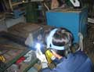

設備紹介
最新機器により、様々なニーズをカタチにしています
- １ x アマダNCT自動タレットパンチプレス（NCT-VIPROS-３４５）による高速加工
- ２ x アマダ自動ベンディング８０ｔ・３５ｔ
- １ x アマダベンダー８０ｔ
- ２ x アマダベンダー３０ｔ
- ２ x コンデンサースポット溶接機
- １ x 金型研削機
- ２ x 自動溶接機
- ３ x スポット溶接
- ２ x アルゴン溶接機
- ３ x ボルバン
- ３ x 三本ロール
- １ x シャーリング
- １ x コナンシャ
- １ x AMACOM AP-１００（３次元CAD対応）
- １ x AMACOM AP-４０（２次元CAD対応）
工場内の様子です
- 